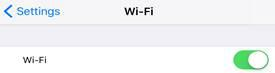

TROUBLESHOOTING GUIDE:
Below are the following:
- 1. Led indicators Table with troubleshooting guide.
- 2. Physical Connection
- 3. Troubleshooting Guide
Modem LED Indicators
| LED LIGHTS | DESCRIPTION | STATUS INDICATOR |
| Power | Indicates of the device power supply | STEADY GREEN: NORMAL STATE OFF: 1. SWITCH ON. 2. CHECK POWER SUPPLY. 3. PLUG IN TO POWER SOURCE |
| PON | Passive Optical Network | STEADY GREEN: NORMAL STATE BLINKING : SYNCHRONIZATION ON GOING (UPON TURNING ON THE MODEM) OFF: INTERNET CONNECTION UNSUCCESSFUL. CHECK IF FIBER WIRE IS PROPERLY ATTACHED TO THE MODEM. RESTART MODEM. IF TROUBLE PERSIST CONTACT CUSTOMER SERVICE |
| LOS | Loss of Signal | OFF : NORMAL BLINKING: LOSS OF SIGNAL IN EFFECT. CHECK IF FIBER OPTIC CABLE IS PROPERLY ATTACHED TO THE MODEM. POSSIBLE FIBER BREAK. IF TROUBLE PERSIST CONTACT CUSTOMER SRVICE. |
| Internet | Internet status | STEADY GREEN: The access to Internet is normal. BLINKING: The access to Internet is normal with data transmission OFF: No access to Internet. |
| USB1/USB2 | Indicates of the USB port usage | STEADY GREEN: IN USE. THERE IS A USB STORAGE DEVICE CONNECT TO THE USB PORT. OFF: NO USB STORAGE DEVICE CONNECT TO THE USB PORT; |
| LAN 1 TO LAN 4 | LOCAL AREA NETWORK / ETHERNET CABLE | STEADY GREEN: NORMAL STATE. ETHERNET CABLE IS ATTACHED TO THE LAN PORT OF THE MODEM. BLINKING GREEN: NORMAL STATE. DATA TRANSMISSION ONGOING OFF: NO ETHERNET ATTACHED TO THE LAN INTERFACE. |
| Phone1/ Phone2 | Indicates the phone status and is ready to take incoming and outgoing calls | STEADY GREEN: NORMAL STATE. BLINKING : IN USE OFF : DEACTIVATED |
| Wireless Local Area Network | STEADY GREEN: NORMAL STATE. BLINKING: NORMAL STATE. DATA TRANSMISSION ONGOING OFF : DISABLED. LOOK FOR THE WLAN BUTTON AND SWITCH IT ON. |
|
| Indicates of Wi-Fi Protected Setup | STEADY GREEN: NORMAL STATE. BLINKING: NORMAL STATE, THE RELATED NEGOTIATION IS CONDUCED. OFF : DISABLED. |
Model Physical Connection
Physical connections are an oft-overlooked common culprit. Check all wireless access point (AP) or wireless router ports to
ensure that Ethernet cables are inserted tightly and link status LEDs are green at both ends.
Note: Insert short instruction of interconnectivity
Troubleshooting Guide
I have no internet connection using my Fibr service
Follow this simple checklist to troubleshoot your internet connection:
- 1. Make sure that you are up to date with your account and you have no outstanding balance.
- 2. If you are using an internet browser, make sure that you are not using a Proxy server. This can be checked in your browser settings.
-
- For Internet Explorer: Go to Internet Options > Click Connections tab> Click LAN Settings > Use automatic configuration script and
proxy server should be unchecked - For Google Chrome: Go to Setting > Click Show advance settings > Under Network, click Change proxy settings > Click LAN
settings > Use automatic configuration script and proxy server should be unchecked - For Safari:Click System Preferences > Click Network > Click Advanced > Click Change Settings under Proxies > Make sure all boxes
are unchecked. - For Firefox: Go to Menu > Click Options > Click Advanced > Click Network tab > Click Settings under Connection > Make sure No
proxy is selected.
- For Internet Explorer: Go to Internet Options > Click Connections tab> Click LAN Settings > Use automatic configuration script and
- 3. Check the power and LED indicators of your modem; the color must be green and should be steady. If lights are off or the LED indicators are
blinking, please make sure the cables of your modem are properly connected. - 4. Perform a power cycle by turning your modem off for 5 minutes, and back on to re-sync your modem with our network.
My internet connection is slow when using my Fibr service.
There are several factors that may affect your internet browsing experience. Here are a few of them:
- 1. Multiple and simultaneous internet usage with activities such as heavy downloading, video streaming, online gaming, apps with auto-updates, etc.
- 2. The specs of your PC, laptop or mobile device may not be compatible with the speed of your plan which does not allow you to attain the maximum speed. You
may consult with your personal technician on how to optimize the performance of your device. - 3. Your connection to your Wi-Fi modem may be interfered by household electronic appliances (microwave, cordless phone, etc.). You may be too far away from
your modem or there are physical obstructions affecting your connection. Make sure that your connection to your Wi-Fi modem is clear from any obstructions. - 4. If you are using an internet browser, add-ons such as multimedia add-ons, search bars, etc. may affect the performance of your internet connection. You may try disabling them.
- 5. After checking on 1-4, perform a power cycle by turning your modem off and then on after 5 minutes to re-sync your modem with our network. After 20 seconds or the modem has fully initialized, perform a speed test by going to http://www.speedtest.net and select the nearest PLDT server in your location. Then click Begin Test. The results should show you your download and upload speeds. You should at least be getting 80% of your subscribed download speed.
- 6. If you are able to get the subscribed speed but you are still experiencing slow connection, try deleting your browser history, cookies and cache.
I cannot open specific websites.
If you cannot open a certain website but you have no problem with others, this can be caused by several factors:
- Double check if you entered the right URL.
- The website might be inaccessible because it is down or you can try another device or internet browser.
- Check your device's internet browser settings. Make sure you're not using a proxy server.
- If you have an Anti-Virus this may prevent you from browsing some websites.
I cannot connect to my Wi-Fi modem.
Follow these steps if you are unable to connect to your Wi-Fi:
- 1. Please make sure that you are connected to the right Wi-Fi name and have entered the correct password.
- 2. If you encounter "Authentication Error," please click on forget button then select the Wi-Fi name and type the correct password.
- 3. Perform a power cycle by turning your modem off and then on after 2-3 minutes and try again after 20 seconds or after the modem fully initializes.
I forgot my modem password.
This happens even to the best of us so don't worry! If you have a new device or have reset your mobile device to its factory settings but you forgot your
Wi-Fi modem password, you may just do a hard reset on your Wi-Fi modem. Follow these easy steps:
- 1. Look for a small hole on your Wi-Fi modem. It is usually located near the power button.
- 2. Using a pin or needle, gently press the button inside the small hole and hold for at least 5 seconds.
- 3. Once your Wi-Fi modem restarts, connect it to your PC or laptop via a LAN cable.
- 4. Open your internet browser and put http://192.168.1.1
- 5. Once you have opened the Wi-Fi modem User Interface, log in using the default username and password which can be found at the back or under the modem.
- 6. Upon logging in, you may personalize your Wi-Fi modem name (SSID) and set your new password.
Wi-Fi Device Troubleshooting Guide
Ensure that WiFi is switched on from your mobile device.
For iOS devices, go to: Settings, then WiFi.

For Android devices, go to: Settings, then WiFi.
- 1. Check If Wi-Fi SSID and password are correct.
- 2. Choose the correct Wi-Fi SSID (if not connected to desired Wi-Fi).
- 3. Enter the correct Wi-Fi password.
- 4. If you have previously connected to your Wi-Fi Modem but somehow could no longer connect, "choose forget this network" option and repeat steps 2 and 3.
Disclaimer:
- a. PLDT Inc. reserves the right to alter any specification without prior notice.
- b. Photos and specifications shown in this digital guide may vary from the actual unit.